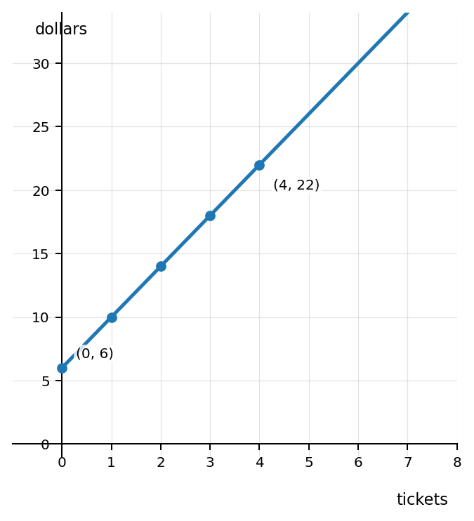
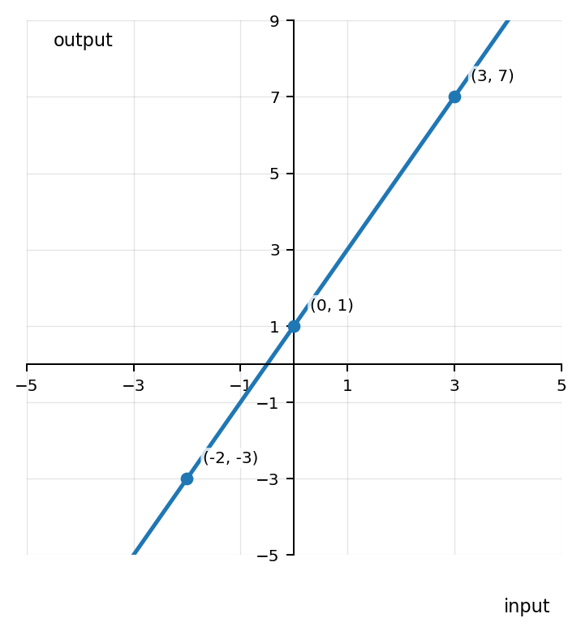
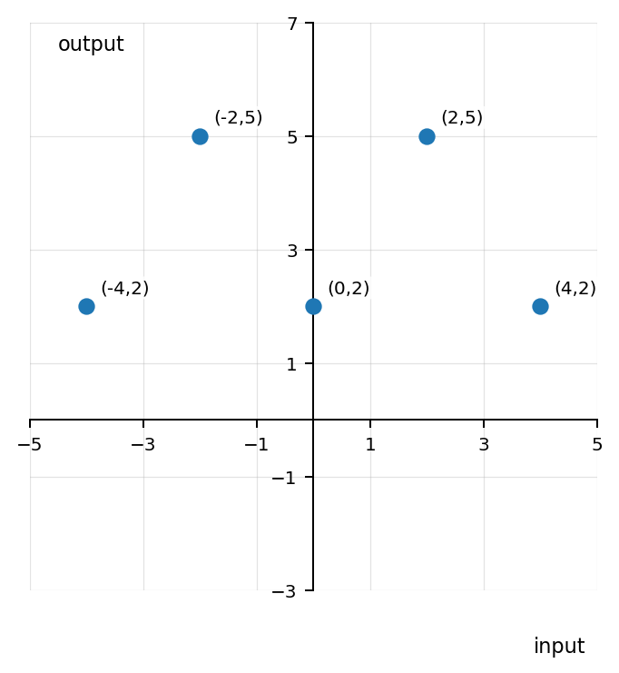
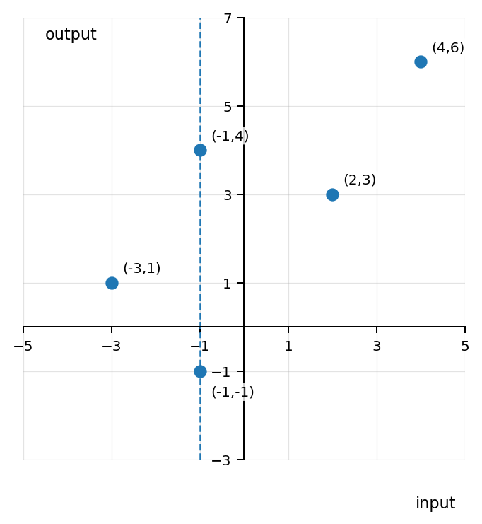

Mathematical idea: A function is dependable: each input gets one output.
Today we will read input-output relationships from rules, tables, graphs, and situations. We will also decide when a relationship is a function.
Students will interpret functions as rules that connect inputs and outputs without relying on formal domain and range language.
I can statements
Later in this section, you will return to the task below. For now, do not solve it. Instead, annotate it individually. Circle anything familiar, underline symbols or directions that seem important, and write notes about what information you think will be needed.
As you annotate, ask yourself: What is the input? What is the output? Where do you see a rule? Where do you see evidence that each input has exactly one output? What information might make a relationship fail to be a function?
Future Task
A school store is testing a ticket reward system. A student says the context, equation, table, and graph below all describe the same function.
A student starts with $6$ bonus points and earns $4$ points for each ticket turned in.
$p=4t+6$, where $t$ is tickets and $p$ is points.
| Tickets | 0 | 1 | 2 | 4 |
|---|---|---|---|---|
| Points | 6 | 10 | 14 | 22 |

Directions
Read the introduction aloud with a partner or in a small group. As you read, annotate the text by highlighting important ideas, circling key vocabulary, and writing short notes about connections, questions, or predictions in the margins.
An input is the value we start with. An output is the value we get after a rule, situation, table, or graph does something with the input.
For example, if a machine doubles a number and then adds $1$, the input $5$ becomes the output $11$. The input is not better or more important than the output. They work together as a pair.
A function is a relationship where each input has exactly one output. This does not mean every output has to be different. Two different inputs can share the same output. The problem happens when one input tries to go to two different outputs.
Functions help us make predictions. If we know the rule and the input, we can find the output. If we see a table or graph, we can look for the same idea: each input should lead to one clear answer.
Stop and Discuss
In a situation, the input is usually the quantity we choose or control. The output is the quantity that depends on that input.
Input-output pair: A pair of values that go together. In an ordered pair $(x,y)$, the input is usually $x$ and the output is usually $y$.
A school club pays a one-time setup cost of \$5 and then pays \$3 for each poster printed.
A phone charger costs \$12 plus \$2 for gift wrapping. Identify the input and output, then find the output if a person buys $3$ chargers with gift wrapping.
Stop and Discuss
Function notation is another way to show an input-output rule. In $f(x)$, the $x$ is the input. The value of $f(x)$ is the output.
Evaluate the function rule for each input.
$$f(x)=2x+5$$
| $x$ | $-1$ | $0$ | $3$ |
|---|---|---|---|
| $f(x)$ |
Table outputs: $3,5,11$.
🔴 Teacher Note: Watch negative substitution. Ask: “Where did the input go in the rule?”For $g(x)=3x-4$, find $g(-2)$, $g(1)$, and $g(5)$. Show the substitution step for at least one input.
A table lists input-output pairs in rows or columns. A graph shows each pair as a point. The input tells how far left or right to go, and the output tells how far up or down to go.
Use the graph to find the outputs for inputs $-2$, $0$, and $3$. Then record the values in the table.

| Input | $-2$ | $0$ | $3$ |
|---|---|---|---|
| Output |
A graph includes the points $(-4,1)$, $(0,3)$, and $(2,4)$. Identify the input and output in each pair, then make a table from the points.
| Input | $-4$ | $0$ | $2$ |
|---|---|---|---|
| Output | $1$ | $3$ | $4$ |
Stop and Discuss
A relationship is a function when each input has exactly one output. Repeated outputs are allowed. Repeated inputs are only a problem when the same input is paired with different outputs.
Decide whether each relation is a function. Explain using inputs and outputs.
Relation A

Relation B

A student says, “This table is not a function because the output $5$ appears twice.” Critique the claim.
| Input | $1$ | $2$ | $3$ | $4$ |
|---|---|---|---|---|
| Output | $5$ | $8$ | $5$ | $11$ |
The claim is incorrect. This relation is a function because each input $1,2,3,4$ has exactly one output. The output $5$ appears twice, but repeated outputs are allowed.
🔴 Teacher Note: Have students say: “Same input with different outputs is the problem.”Stop and Discuss
Do not solve the future task yet.
Look back at the future task. Highlight one part that makes more sense now than it did at the beginning. Circle one part that still feels unfamiliar. Write one sentence about what representation you would look at first.